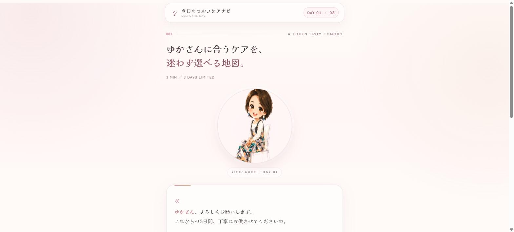
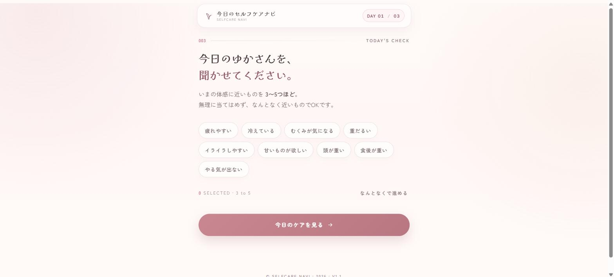
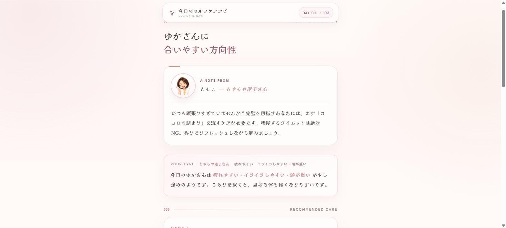
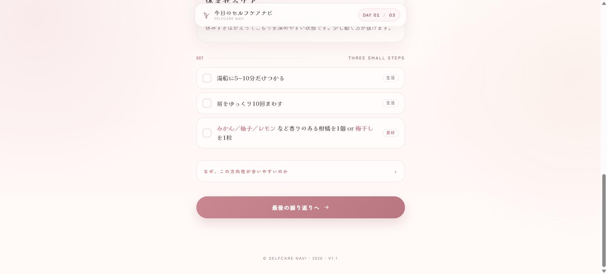
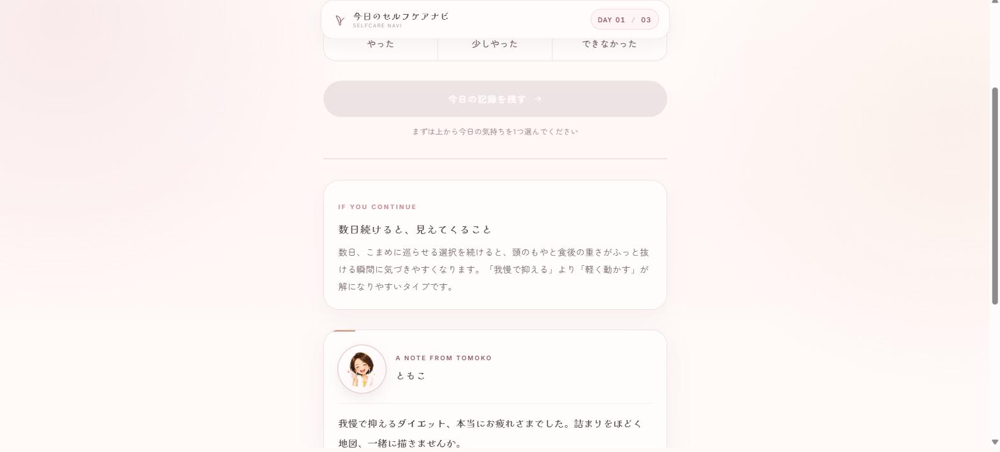
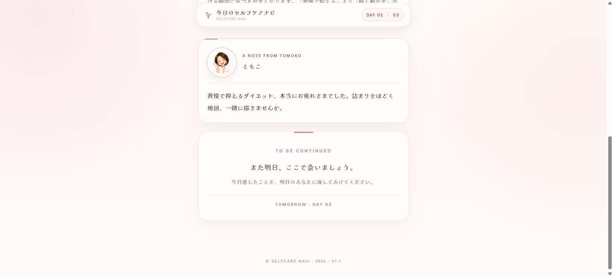

3日間の体質チャレンジ・参加者向けマニュアル
診断からアプリ完了までの流れです。所要時間は各Day 1〜3分。
Instagram等のリンクから「ダイエット迷子診断」ページを開き、18問に答えます。
あなたの体質を 6タイプのいずれかに分類：
ぐったり迷子もやもや迷子ふらふら迷子ぽちゃぽちゃ迷子どよ〜ん迷子からから迷子
診断結果ページの案内に沿って、公式LINEを友だち追加してください。タイプ別に自動で案内が届きます。
💡 診断結果ページに動画解説もあります。3〜5分程度なので、ぜひご視聴を。
LINEから届く「今日のセルフケアナビ」リンクをタップして、アプリを開始します。
下の名前、ニックネームでOKです。
診断結果のタイプが自動セットされています。違うと感じたら変更もOK。
体感に近いものを 3〜5つ タップ。「なんとなくで進める」も可。
あなたの体質×今日の状態から、今日やること3つを提案します。
「やった」「少しやった」「できなかった」の3択でOK。完璧でなくて大丈夫。






翌日・翌々日にも、朝のLINE通知から続きを再開してください。
💫 提案されるアクションは Dayごとに違う ものが出ます。同じことを繰り返さない設計です。
💫 3日完了後は、より精密な54問分析が受けられます（無料）。
もし忙しくてスキップした場合、以下のリマインドが自動で届きます：
🌿 朝9時ごろ: 「今日もお待ちしてます」
🌸 夜20時ごろ: 「今日まだ記録してないかも」
各Dayは 最大3日 猶予があります。金曜スタート→土日忙しい→月曜再開、も OK！
Day3完了後の「精密分析」で出た結果をスクショして、ともこ先生にLINEで送ってください。
iPhone: サイドボタン＋音量↑ / Android: 電源＋音量↓
タップするとフォームが開きます。
複数枚まとめて選べます。送信までに1〜3分かかることも。閉じずにお待ちください。
Q. 途中で閉じても大丈夫？
大丈夫です。LINEから同じリンクを開けば 続きから再開 できます。
Q. Day2に進んだのに、まだDay1をやってないとダメ？
Day1が未完了なら、翌日開いても Day1 のままです。順番に進めてください。
Q. タイプを間違えて選んじゃった
Screen 1（トップ）で「タイプを変更する」ボタンからいつでも変えられます。
Q. スクショ送信が固まっちゃう
画像サイズによって1〜3分かかることがあります。画面を閉じずお待ちください。それでも進まない場合は、直接LINEで画像を送ってもOKです。
Q. 「精密分析」を最初からやり直したい
結果画面の下にある「→ もう一度精密診断をやり直す」リンクをタップしてください。54問からやり直せます。